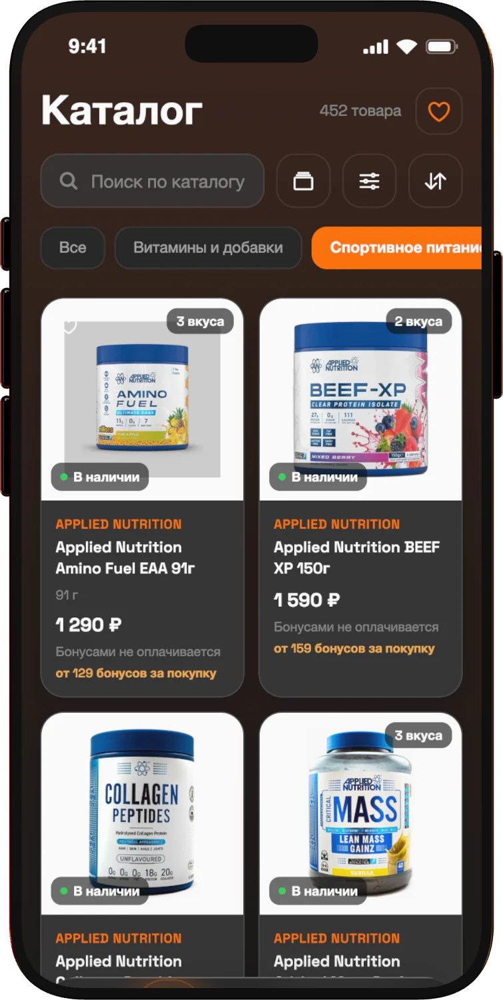

work · sports nutrition chain
5LB
Khabarovsk and Vladivostok. I built the chain's whole digital side: the app, loyalty bonuses, CRM, website, staff bot and the 1C integration.
- Expo app for iOS, Android and web with over-the-air updates
- Rust backend: bonuses, prize wheel, referrals, partner program, passwordless login
- CRM: RFM audiences, campaigns, automated flows, an AI agent, 820 tests
- Cameras count visitors and how often staff approach them
